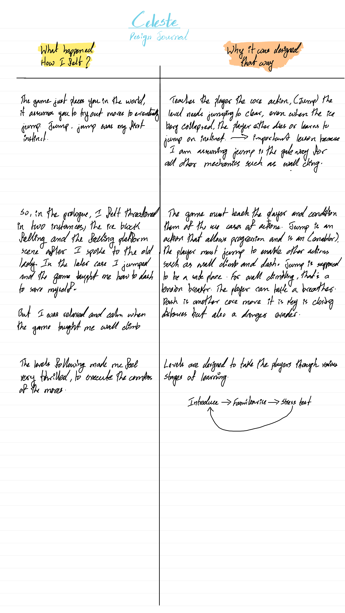
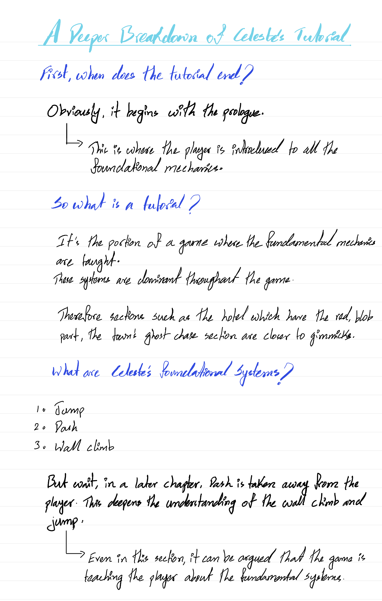
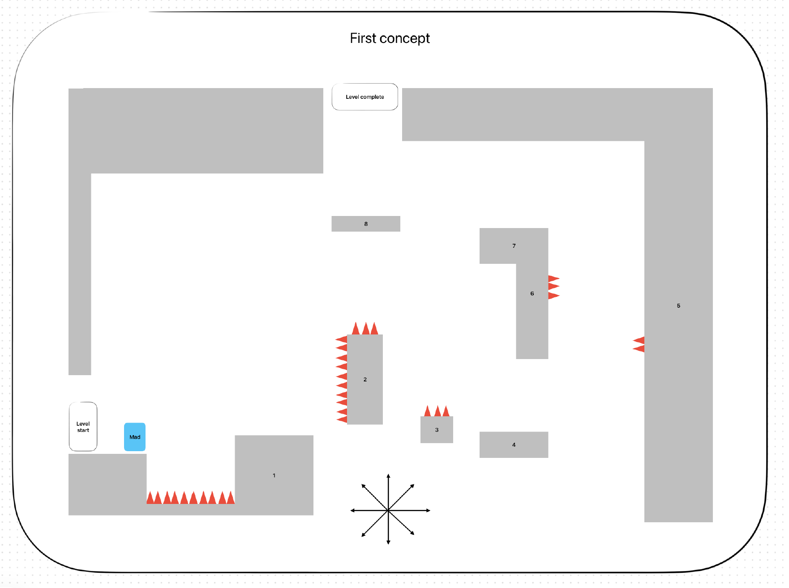
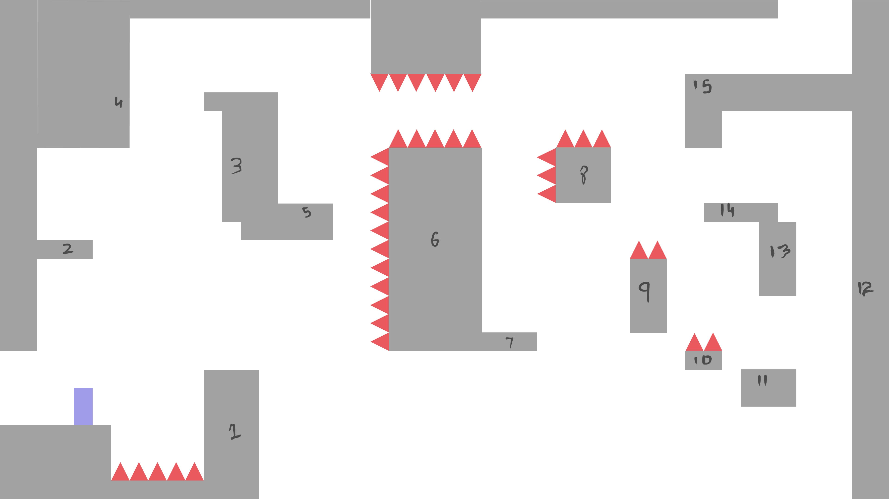
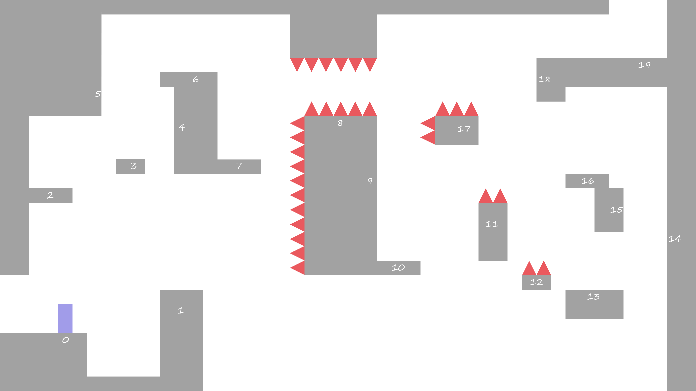
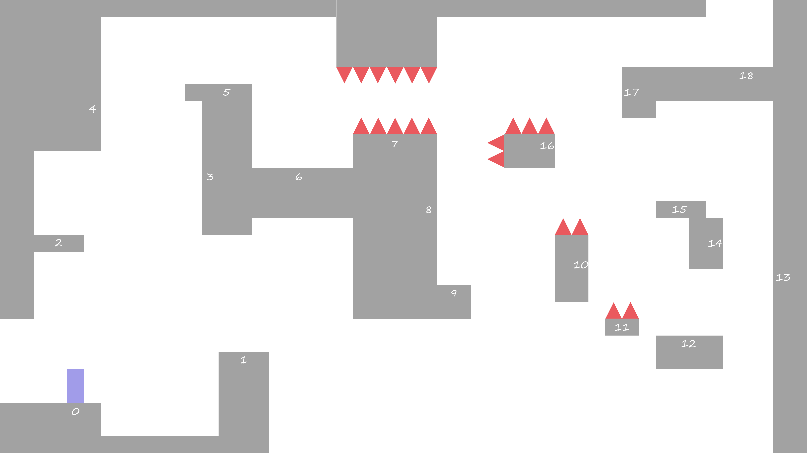
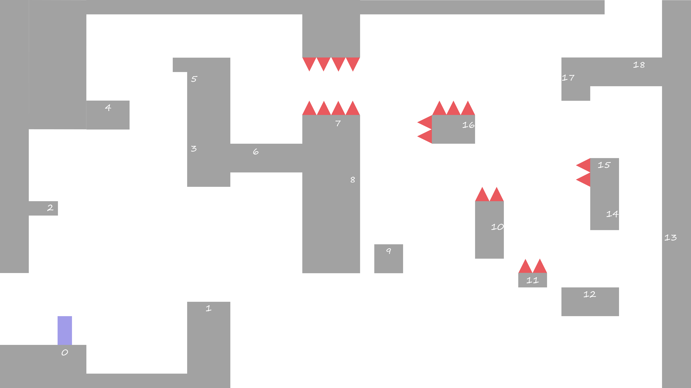
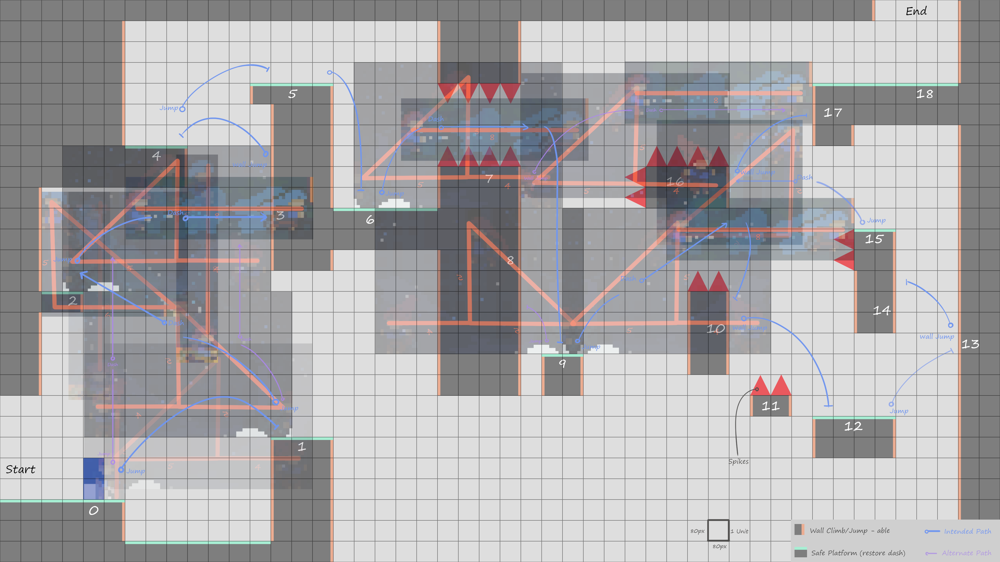

A level design exercise demonstrating rigorous process — source analysis, derived principles, and five documented iteration passes.
Brief
Design a tutorial level for Celeste
Challenge
Ubisoft India Campus Design Challenge 2026
Mechanics taught
Jump, Dash, Wall Jump
Source Analysis
Before designing anything, I played Celeste three times with a structured analysis framework — documenting what happened, how it felt, and why it was designed that way. From this I derived three design philosophies that governed every subsequent decision.
01
Uncertainty comes from information asymmetry, not difficulty.
The player doesn't need to be punished to feel uncertain. They need to not know the rules yet. Celeste never makes the player feel cheated — failure is always legible.
02
Feedback precedes demand.
The geometry communicates what's required before it demands it. The ice block shakes before it falls. The level shows the player what's coming before asking them to respond to it.
03
Stress tests confirm minimum viable play.
A tutorial is not complete until the player has proven they can perform the mechanics under pressure. Every tutorial ends with a test — not a prompt, a test.


Level Structure
The level is split into two deliberately designed sections. At no point is the player instructed. Every mechanic is discovered through interaction with the geometry alone.
Section 01
The Playground
Platforms 0–6. Consequence-free. No death state. The player discovers jump, dash, and wall jump through geometry and experimentation alone. Falling is not failure — it's information.
Section 02
The Stress Test
Platforms 7–18. Death is now the fail state. The player must perform all three mechanics taught in the playground to reach platform 18. This confirms minimum viable play.
Five Iteration Passes
Every pass identified a specific problem, reasoned through a resolution, and updated the geometry. Nothing was changed without a documented reason.
Pass 01
Wall jump introduced at the hardest moment
Dedicated wall jump moment needed earlier. Player should hit a wall naturally and find pushing off it is the safe path upward.
Dash has no isolated introduction
Dedicated dash introduction needed between the opening jump and the combo section.
Spike on platform 5 punishes discovery
The right wall should be an invitation to experiment, not a hazard. Spike removed.

Pass 02
Jump and Dash introduction has no discovery moment
Spikes removed below the gap between platforms 0 and 1. Fall becomes a safe fail state. The geometry teaches.
Player can skip wall jump through jump + dash combo
New platform added between 2 and 3 as a safe recovery surface. Jump and dash distances need to be calculated.

Pass 03
Wall jump skip still exists in the playground
Player can dash directly to platform 6 without ever wall jumping. Platform 6 needs to be raised beyond dash range, or a geometrically unavoidable wall jump moment must be added.

Pass 04
Wall jump skip still unresolved — platform 5 reachable without wall jump
Player can jump from platform 2 and dash diagonally to reach platform 5 directly, bypassing 3 and 4. Platform 4 must be redesigned so wall jump is the only viable exit regardless of how the player arrived.

Pass 05
Platform 4 extended to close the skip permanently
Platform 4 extended horizontally to block the diagonal jump. Player is now forced to dash horizontally to reach platform 3, making the wall jump from 3 to 4 un-skippable.

Jump & Dash Distance Verification
To verify platform geometry was buildable within Celeste's movement physics, I captured gameplay footage, extracted before and after frames for each action, and overlaid them onto my 80×80px grid. Every platform dimension was checked against actual movement distances before the final layout was locked.

Final Layout
The result of five passes, three derived philosophies, and geometry verified against Celeste's actual movement physics. Two sections, 18 platforms, zero instructions.